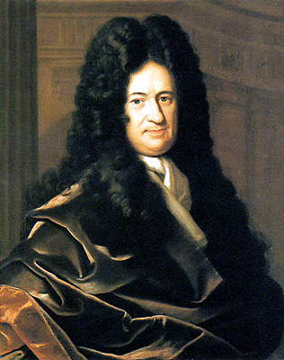
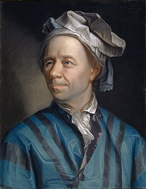

Isaac Newton
Đồng sáng lập Giải Tích học.

G.W. Leibniz
Người phát minh ký hiệu ∫ và d/dx.

Leonhard Euler
Đóng góp lớn cho hàm số mũ và giải tích.
Đạo Hàm • Tích Phân • Diện Tích • Thể Tích
Đồng sáng lập Giải Tích học.

Người phát minh ký hiệu ∫ và d/dx.

Đóng góp lớn cho hàm số mũ và giải tích.